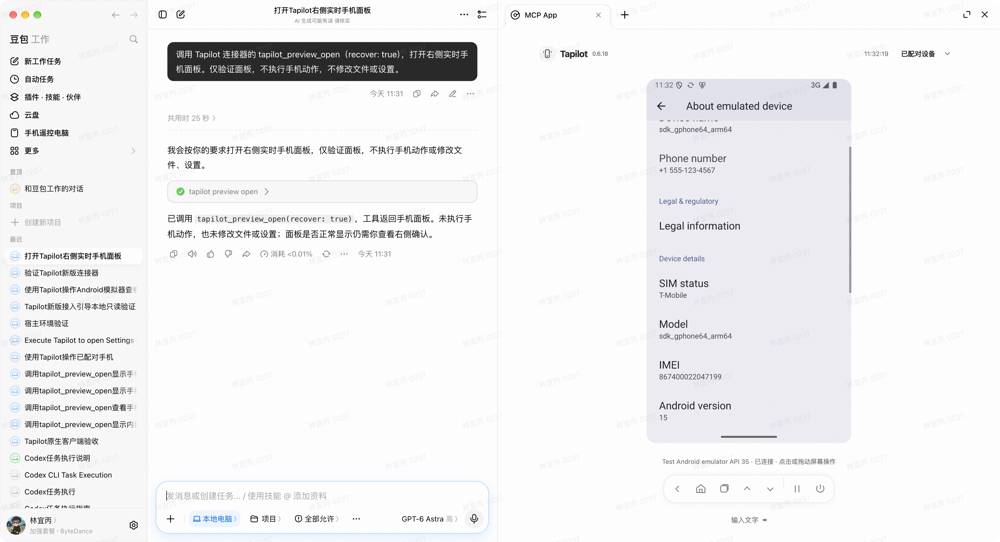
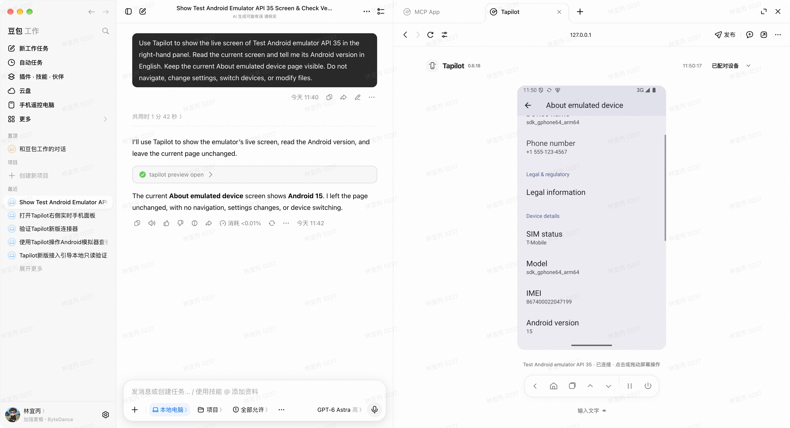
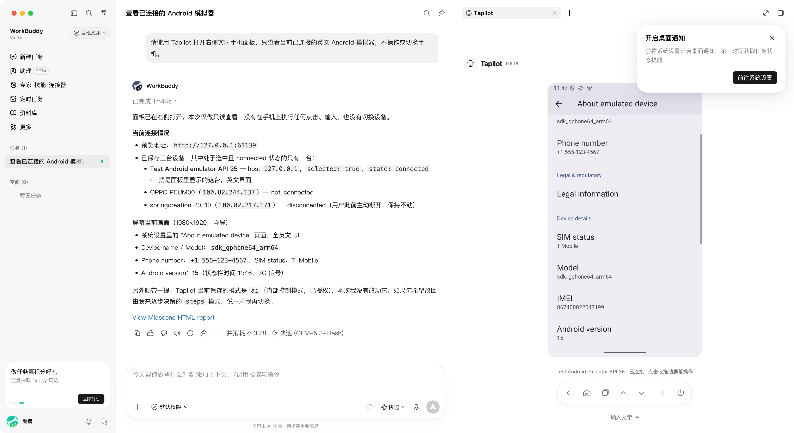
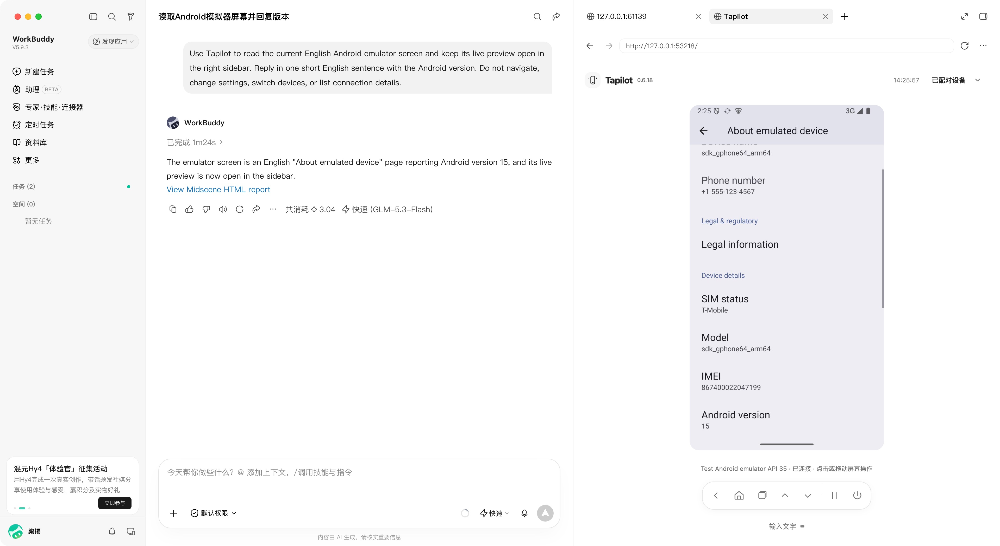
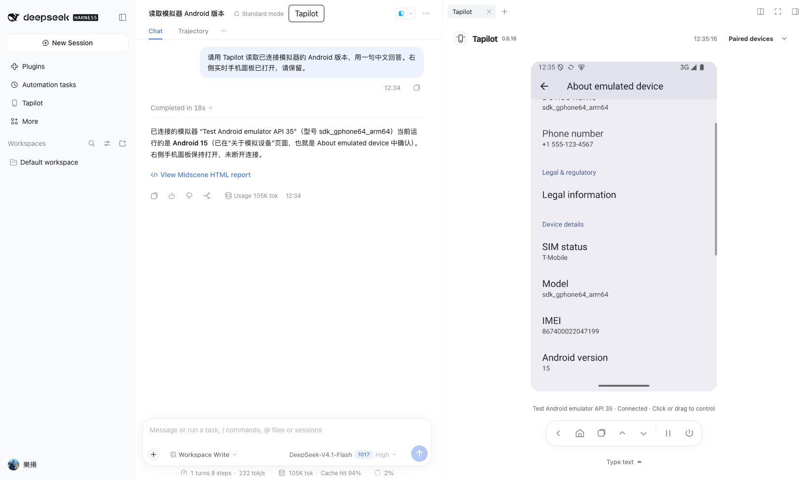
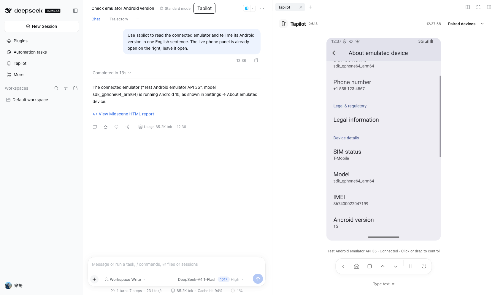
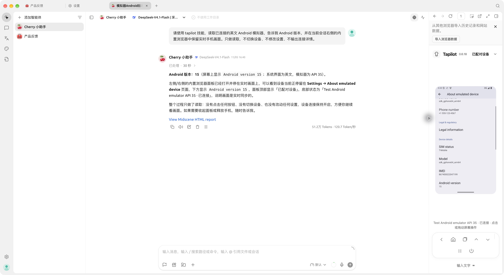
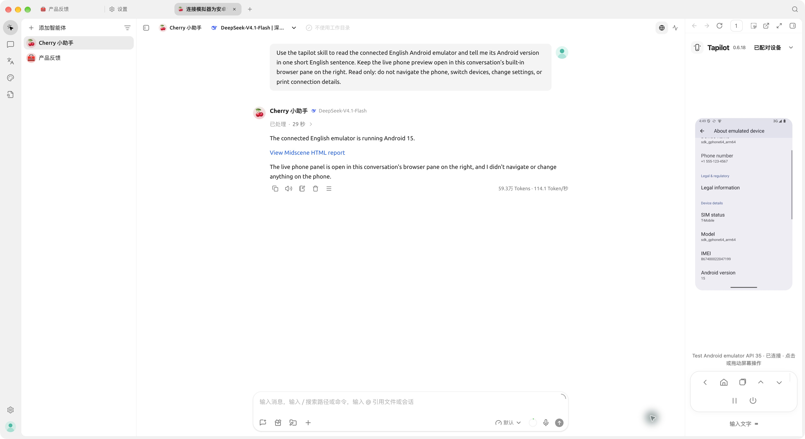

豆包工作 · 中文
部分验收 / PartialMCP App

新版面板恢复现场；稳定性及完整中文案例待验收。含账号水印。
Native client showcase review · 2026-11-05
MCP App

新版面板恢复现场；稳定性及完整中文案例待验收。含账号水印。
原生浏览器侧栏 / Native browser sidebar

真实英文会话与手机画面。含账号水印，当前为审核原图。
原生浏览器侧栏 / Native browser sidebar

真实中文会话与手机画面。包含连接详情和通知浮层，当前为审核原图。
原生浏览器侧栏 / Native browser sidebar

真实英文会话与英文 Android 15 模拟器；右侧内置浏览器实际显示实时画面。宿主界面及任务标题仍为中文。
DSH 原生插件侧栏 / Native plugin sidebar

已登录后的真实会话，保留 Workspace Write 沙箱；使用工作区截图目录。
DSH 原生插件侧栏 / Native plugin sidebar

真实英文会话、英文模拟器与原生插件侧栏。
Work Agent 内置浏览器侧栏 / Native browser pane

原生 2.1.10；DeepSeek-V4.1-Flash 真实会话，Skill + CLI 读图确认 Android 15；未注册 MCP。浏览器面板由操作者展开，Agent 导航到预览。
Work Agent 内置浏览器侧栏 / Native browser pane

原生 2.1.10；DeepSeek-V4.1-Flash 真实会话，Skill + CLI 读图确认 Android 15；未注册 MCP。Agent 自行打开并导航会话内浏览器。宿主界面和标题仍为中文。